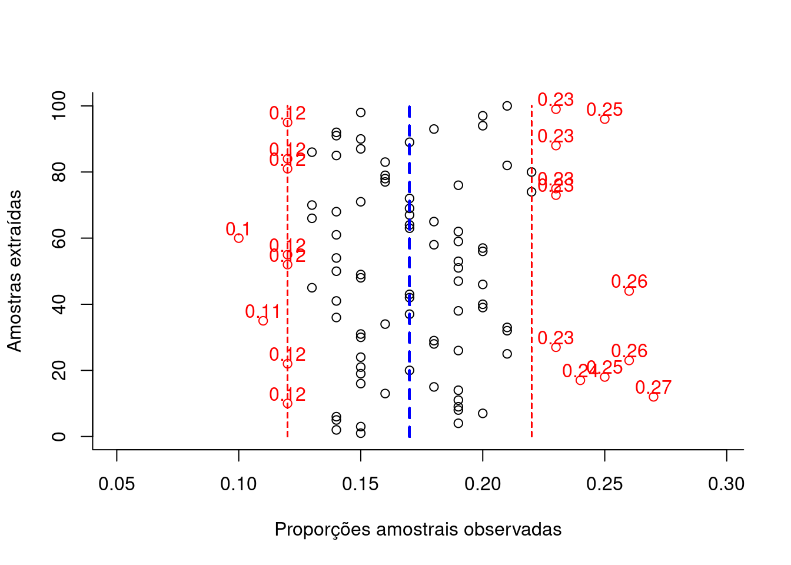

9.2 Intervalos de confiança
Um intervalo de confiança (\(IC\)) pode ser entendido com a faixa de valores delimitada por um mínimo e um máximo, calculados como função direta de um nível de confiança e da variabilidade e inversa da tamanho amostral.
\[ \text{estimativa amostral} \pm confiança.\sqrt\frac{variabilidade}{n} \]
Raramente se dispõe de informação a respeito da variabilidade (\(\sigma^{2}\)) da população estudada. Assim, a variabilidade populacional será frequentemente incorporado na expressão acima, com ligeiras modificações, na forma de sua estimativa amostral (\(S^{2}\)).
De certo modo, um intervalo de confiança reflete uma estimativa objetiva da (im)precisão e do tamanho da amostra de determinada pesquisa e, assim, podemos considerá-lo como uma medida da qualidade da amostra e da pesquisa.
O nível de confiança é designado pela quantidade \((1-\alpha)\) na qual \(\alpha\) é denominado de nível de significância, uma medida da probabilidade de erro.
Dependendo do nível de confiança que escolhemos os limites superior e inferior do intervalo mudam para uma mesma estimativa amostral. Os intervalos de confiança mais utilizados na literatura são os de 90%, 95%, 99% e menos de 99,9%.
O intervalo de confiança de 95% é tradicionalmente o intervalo mais utilizado na literatura e isso está relacionado ao nível de significância estatística (\(P<0,05\)) geralmente mais aceito.
Quanto menor for a amplitude de um intervalo, maior será a precisão da estimativa. Todavia, somente estudos com amostras razoavelmente grandes resultarão em um intervalo de confiança estreito, indicando simultaneamentente com alta precisão e alto grau de confianla a estimativa do parâmetro.
Intervalos de confiança podem ser construídos a quase todas as quantidades estatísticas e suas diferenças (quando se procura estudar se há ou não diferenças entre os parâmetros de duas populaçoes) como, por exemplo:
- médias;
- proporções; e,
- variâncias.
Um intervalo de confiança estabelecido sob certa probabilidade não deve ser interpretado como sendo a faixa de valores, delimitada por um mínimo e máximo, entre os quais o parâmetro da população (o qual se estima ou sobre o qual se infere) se insere.
Mas sim que, extraíndo-se um grande número de amostras de igual tamanho e da mesma população, e construindo-se para cada uma dessas amostras um intervalo de confiança de um mesmo nível de significância (\(\alpha\)), observaremos que uma determinada proporção desses intervalos, chamada de nível de confiança (\(1-\alpha\)) irá, de fato, conter o parâmetro sobre o qual se estima ou sobre o qual se infere. Por conseguinte, uma proporção desses intervalos chamada de nível de significância (\(\alpha\)) não irá conter o verdadeiro valor do parâmetro populacional.
Assim, \((1-\alpha)\) traduz o grau de confiança que se tem que um intervalo de confiança, calculado sobre uma estatística advinda de uma particular amostra de tamanho \(n\) da variável aleatória \(X\), inclua o verdadeiro valor do parâmetro da população:
IC.N = function (N, n, mu, sigma, conf) {
dados=data.frame()
plot(0, 0,
type="n",
xlim=c(mu-0.4*mu,mu+0.4*mu),
ylim=c(0,N),
bty="l",
xlab="Escala de valores da variável",
ylab="Intervalos amostrais construídos",
main=paste0("Intervalos com iguais níveis de confiança fixados em ", 100*conf, "% \n(",N," amostras de tamanho ",n,")") ,
sub=paste0("Parâmetros da distribuição da população Normal ( \u03bc, \u03c3) = (",mu,", ", sigma,")"))
abline(v=mu, col='red', lwd=2, lty=2)
#axis(1, at = c(mu-1*mu, mu, mu+1*mu))
zc = qnorm(1-((1-conf)/2))
#sigma.xbarra = sigma/sqrt(n)
for (i in 1:N) {
x = rnorm(n, mu, sigma)
media = mean(x)
erro= media-mu
sd = sd(x)
li = media - zc * sd/(sqrt(n))
ls = media + zc * sd/(sqrt(n))
temp=cbind(mu, media, erro, li, ls)
dados=rbind(dados, temp)
plotx = c(li,ls)
ploty = c(i,i)
if (li > mu | ls < mu) lines(plotx,ploty, col="red", lwd=2, lend=0)
else lines(plotx,ploty, lend=0)
if (li > mu | ls < mu) points(media, i, col="red", cex=1)+text(y=i+3,x=media, labels=round(media,1), cex=1, col='red')
else points(media, i, col="black", cex=1)
}
colnames(dados)=c("mu", "media", "erro", "li", "ls")
return(dados)
}

## mu media erro li ls
## 1 9.421 9.226 -0.19489 8.166 10.286
## 2 9.421 9.064 -0.35740 8.140 9.987
## 3 9.421 9.388 -0.03292 8.502 10.275
## 4 9.421 9.362 -0.05882 8.255 10.469
## 5 9.421 9.804 0.38251 8.920 10.687
## 6 9.421 9.188 -0.23262 8.309 10.068
## 7 9.421 9.625 0.20377 8.537 10.712
## 8 9.421 9.539 0.11778 8.658 10.420
## 9 9.421 8.564 -0.85662 7.562 9.567
## 10 9.421 9.909 0.48843 8.823 10.996
## 11 9.421 8.893 -0.52799 7.915 9.871
## 12 9.421 9.082 -0.33885 8.179 9.985
## 13 9.421 9.662 0.24083 8.546 10.778
## 14 9.421 10.040 0.61860 9.209 10.870
## 15 9.421 9.693 0.27151 8.663 10.722
## 16 9.421 8.042 -1.37911 7.072 9.012
## 17 9.421 8.323 -1.09771 7.284 9.363
## 18 9.421 8.574 -0.84728 7.417 9.731
## 19 9.421 10.337 0.91625 9.212 11.463
## 20 9.421 8.944 -0.47718 8.015 9.872
## 21 9.421 10.488 1.06654 9.390 11.585
## 22 9.421 9.450 0.02882 8.568 10.332
## 23 9.421 8.879 -0.54177 7.911 9.847
## 24 9.421 9.968 0.54694 9.057 10.879
## 25 9.421 9.403 -0.01782 8.417 10.389
## 26 9.421 9.742 0.32114 8.837 10.647
## 27 9.421 8.970 -0.45086 7.914 10.026
## 28 9.421 9.906 0.48516 9.012 10.800
## 29 9.421 9.256 -0.16508 8.255 10.257
## 30 9.421 8.780 -0.64080 7.826 9.735
## 31 9.421 9.381 -0.03954 8.270 10.493
## 32 9.421 10.724 1.30294 9.759 11.689
## 33 9.421 9.583 0.16209 8.743 10.423
## 34 9.421 9.930 0.50855 9.040 10.819
## 35 9.421 9.342 -0.07879 8.301 10.383
## 36 9.421 8.307 -1.11368 7.369 9.245
## 37 9.421 9.808 0.38705 8.896 10.720
## 38 9.421 9.848 0.42729 8.913 10.783
## 39 9.421 10.118 0.69699 9.155 11.081
## 40 9.421 9.653 0.23151 8.529 10.776
## 41 9.421 9.122 -0.29928 8.177 10.066
## 42 9.421 10.000 0.57868 9.114 10.886
## 43 9.421 9.318 -0.10266 8.181 10.456
## 44 9.421 9.531 0.11038 8.624 10.439
## 45 9.421 9.729 0.30807 8.632 10.826
## 46 9.421 9.699 0.27779 8.695 10.703
## 47 9.421 9.578 0.15671 8.656 10.500
## 48 9.421 9.928 0.50747 8.968 10.889
## 49 9.421 8.768 -0.65280 7.885 9.651
## 50 9.421 10.192 0.77055 9.203 11.181
## 51 9.421 9.233 -0.18820 8.194 10.272
## 52 9.421 9.062 -0.35934 7.994 10.129
## 53 9.421 9.033 -0.38823 7.968 10.097
## 54 9.421 9.351 -0.06996 8.323 10.379
## 55 9.421 9.218 -0.20275 8.147 10.289
## 56 9.421 10.351 0.93026 9.292 11.411
## 57 9.421 9.109 -0.31193 7.999 10.219
## 58 9.421 9.825 0.40357 8.800 10.850
## 59 9.421 8.408 -1.01284 7.252 9.564
## 60 9.421 9.626 0.20513 8.472 10.780
## 61 9.421 9.303 -0.11827 8.214 10.391
## 62 9.421 10.029 0.60791 8.999 11.059
## 63 9.421 10.371 0.94995 9.262 11.480
## 64 9.421 9.621 0.20041 8.784 10.459
## 65 9.421 9.116 -0.30500 8.108 10.124
## 66 9.421 8.779 -0.64181 7.717 9.841
## 67 9.421 9.290 -0.13080 8.124 10.457
## 68 9.421 8.737 -0.68428 7.839 9.634
## 69 9.421 9.849 0.42806 8.817 10.881
## 70 9.421 8.900 -0.52093 7.877 9.923
## 71 9.421 9.635 0.21389 8.665 10.605
## 72 9.421 9.200 -0.22061 8.065 10.335
## 73 9.421 10.082 0.66088 9.109 11.054
## 74 9.421 9.912 0.49099 8.846 10.978
## 75 9.421 9.542 0.12136 8.426 10.659
## 76 9.421 9.446 0.02454 8.225 10.666
## 77 9.421 10.176 0.75537 9.223 11.130
## 78 9.421 9.206 -0.21512 8.376 10.036
## 79 9.421 9.669 0.24769 8.827 10.510
## 80 9.421 9.652 0.23130 8.585 10.720
## 81 9.421 9.821 0.39974 8.845 10.796
## 82 9.421 9.212 -0.20869 8.242 10.183
## 83 9.421 9.528 0.10655 8.626 10.429
## 84 9.421 9.855 0.43366 8.825 10.885
## 85 9.421 9.466 0.04529 8.493 10.439
## 86 9.421 9.294 -0.12734 8.171 10.417
## 87 9.421 9.452 0.03137 8.474 10.431
## 88 9.421 9.692 0.27074 8.503 10.880
## 89 9.421 11.035 1.61394 10.082 11.988
## 90 9.421 8.861 -0.56029 7.857 9.865
## 91 9.421 9.502 0.08136 8.509 10.496
## 92 9.421 9.632 0.21107 8.603 10.661
## 93 9.421 9.139 -0.28237 8.182 10.095
## 94 9.421 9.245 -0.17594 8.283 10.207
## 95 9.421 9.166 -0.25507 8.280 10.052
## 96 9.421 8.983 -0.43803 8.078 9.888
## 97 9.421 9.947 0.52604 9.052 10.842
## 98 9.421 9.140 -0.28063 8.245 10.036
## 99 9.421 9.816 0.39536 8.801 10.832
## 100 9.421 9.225 -0.19599 8.294 10.156
O gráfico acima expõe os intervalos de confiança: \((1-\alpha)\)=95% produzidos para as 100 médias de amostras de tamanho 64 extraídas de uma população com parâmetros \(\mu:\) 9.421 e \(\sigma:\) 4.1681.
A proporção de intervalos amostrais que não contém o verdadeiro valor do parâmetro populacional pode ser visualmente inspecionada pelas linhas em vermelho.
Intervalos de confiança bilaterais: intervalos delimitados por dois valores: mínimo e máximo, para a proporção amostral, dentro do qual todos os valores possuem um mesmo nível de confiança de ocorrência.
Intervalos de confiança unilaterais: intervalos delimitados apenas em um de seus lados, nos quais todos os valores possuem um mesmo nível de confiança. Podem ser limitados à direita por um valor máximo ou limitados à esquerda por um valor mínimo.